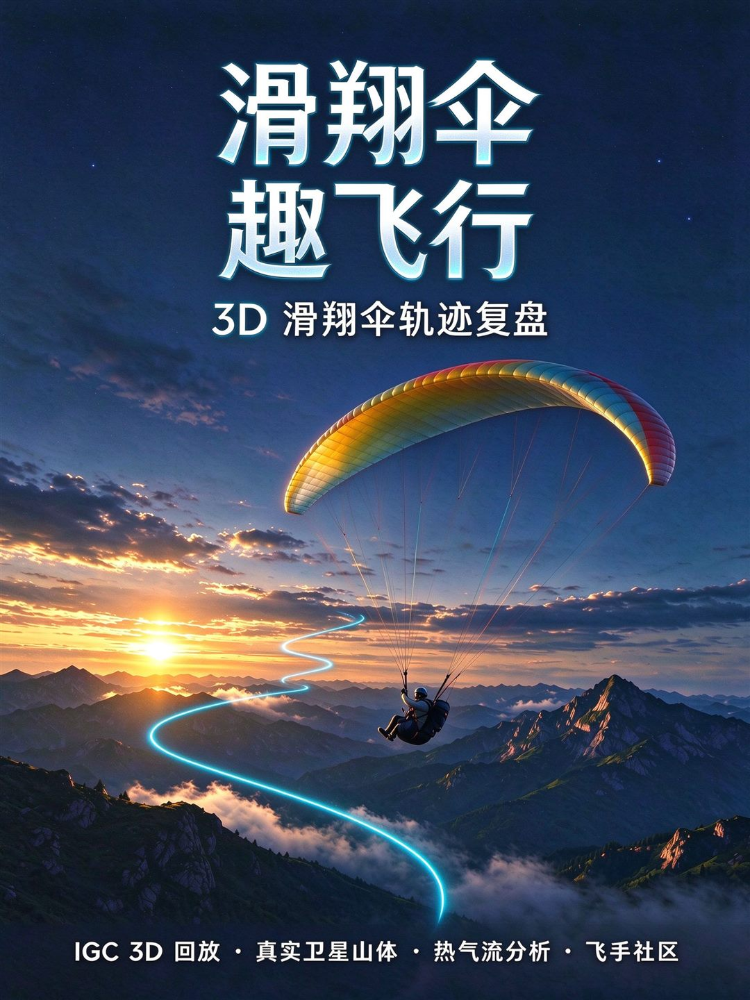

未启用真实 3D 山体。在 index.html 顶部填入
Cesium Ion 免费 token
，轨迹高度将与山体海拔对齐
知道了

滑翔伞趣飞行
3D 轨迹复盘 · 加载中…
复盘
社区
飞行记录
🪂 滑翔伞趣飞行
轨迹复盘
导入
卫星
天地图
热气流地图
自定义
相机: 跟随
高度曲线
着色:速度
对比
打开右上角「导入」加载 IGC 轨迹
支持 .igc / .kml / .gpx · 自动定位起飞点 · v3.11b24
保存
分享社区
飞行故事
高度
0
m
相对
0
m
升降
0.0
m/s
速度
0
km/h
滑翔比
—
:1
姿态
巡航
时间
00:00
/
00:00
高度 · 时间
✕
▶
00:00
—
—
—
—
2x
滑翔伞论坛
飞行记录 · 基地 · 点评，人人可发
—
基地管理
排行榜
登录/注册
✏️ 发帖子
＋ 上传
附近滑翔基地
起飞场 / 降落场 · 人人都可上传
＋ 上传基地
站点访问
…
次
独立访客
…
发帖子
标题
内容
取消
发布
‹ 返回
基地详情
高德导航
飞行记录 · 该基地
＋ 发飞行记录
基地留言
发送
‹ 返回
帖子详情
点评
★
★
★
★
★
回复
飞行记录
记录每次飞行
装备
年度报告
日期
场地/基地
天气
选择
晴
多云
阴
小雨
大风
风速 m/s
飞行次数
伞型
备注
分享到社区
保存
评价轨迹
★
★
★
★
★
取消
提交
‹ 返回
飞行排行榜
按得分
🪂 你的飞行故事
长按图片保存，分享给伞友
知道了
飞手登录
飞手昵称
密码
飞手昵称
身份
普通飞手
基地管理员
所属滑翔基地
我管理的滑翔基地
联系信息
密码
注册新账号
取消
登录
发布轨迹
飞行标题
起飞基地
飞行照片
飞行笔记
可见性
公开分享（所有人可见）
仅自己可见
取消
发布
飞手主页
关闭
基地管理
绘制危险/禁飞区 · 校准起降场
关闭
保存危险/禁飞区域
区域名称
备注说明
取消
保存区域
添加起飞场
点位名称
坐标
点击地图选择位置…
取消
保存
编队轨迹对比
两条轨迹同步回放 · 橙色为对比轨迹
上传 IGC 作为对比轨迹
或选择社区公开轨迹：
关闭
清除对比
装备管理
伞翼 / 吊带 / 副伞 · 飞行小时提醒
装备名称
类型
伞翼
吊带
副伞
其他
累计飞行小时
建议检查/更换小时
添加
关闭
年度飞行报告
关闭
自定义显示
方案名称
轨迹颜色
自动
红
橙
黄
绿
青
蓝
紫
粉
轨迹粗细
细
中
粗
特粗
小球颜色
蓝
白
红
黄
绿
青
紫
粉
小球大小
小
中
大
飞行标识
圆点
滑翔伞
飞机
轨迹显示
尾迹窗口
全部轨迹
已保存方案
关闭
应用并保存
上传滑翔基地
基地名称
类型
起飞场
降落场
海拔（米，可选）
经纬度
场地描述（可选）
经纬度可在手机地图 App（高德/百度）长按取点后填到这里
取消
发布基地
热气流明细
每个上升区段的效率
关闭